My husband Tobin and I had often talked about visiting Fallingwater. On our recent Thanksgiving drive to Providence, RI, we finally worked it into our schedule. I’d seen pictures of Frank Lloyd Wright’s masterpiece for years and always thought the water flowed through the house somehow magically. It took a visit in person for me truly to appreciate the genius that Wright brought to this 1937 weekend retreat. Located in Mill Run, PA, about 90 miles southeast of Pittsburgh, it is one of the architect’s most famous residential designs.
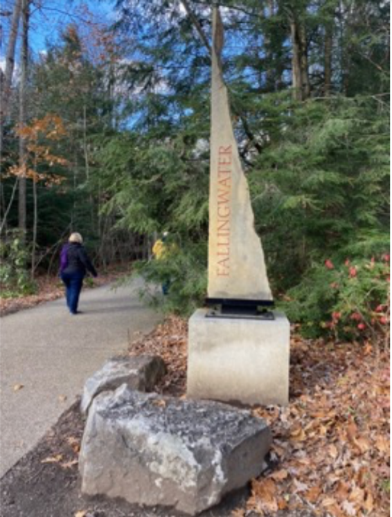 |
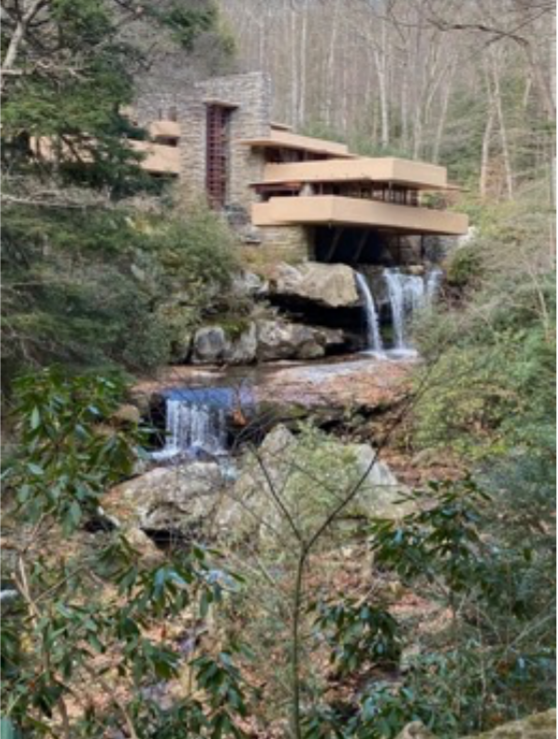 |
For anyone who’s looked for a second home as a weekend getaway, there are many considerations: distance from home, guest space, water access, natural surroundings, areas for entertaining, an appealing view, lack of close neighbors, and most of all, a change from one’s home environment.
Edgar Kaufmann, the wealthy owner of Kaufmann’s department store in Pittsburgh, and his wife Liliane no doubt had these issues on their minds when they met Frank Lloyd Wright. In 1934, their son, Edgar, Jr., apprenticed to Wright at Taliesin (east) in Spring Green, WI. Whether the Kaufmanns met Wright when visiting their son or their son introduced Wright
to them is open to conjecture, but there was clearly a meeting of the minds. The Kaufmanns were world travelers and sophisticated art collectors, who embraced the innovative aesthetic Wright had by now firmly established. Kaufman not only hired Wright to design a weekend home, but he would also engage Wright to design his office in the department store. The office, one of Wright’s classic designs, was preserved and is now at the Victoria and Albert Museum in London, the only Frank Lloyd Wright interior outside the United States.
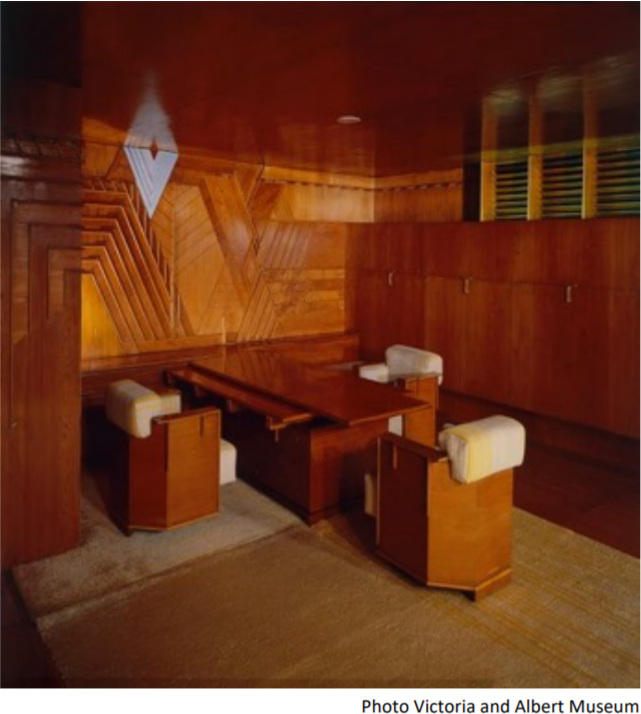
Wright’s philosophy of “organic architecture” that integrated art and nature must have appealed to Kaufmann’s love of the outdoors.
In the 1930s Pittsburgh was well established as “Steel City,” thanks to the area’s ample coal resources and resulting iron and steel manufacturing. It also became known for its oppressive air pollution, which would not be cleaned up until after World War II. It’s not surprising that the Kaufmanns sought a healthier environment for their weekends. Avid hikers, the family had purchased acreage in the rolling hills of Laurel Highlands in southwestern Pennsylvania. They initially used the land as a place for their store employees to relax in nature. The site had been a summer camp with cabins, a pool, and a tennis court.
The Kaufmanns wanted Wright to design a house with a view of a favorite waterfall on Bear Run, the stream running through their property. In what would not be the first time Wright disagreed with his clients, he convinced them otherwise, placing the house above the waterfall with a series of cantilevered stories extending over the falls themselves. As a result, one does not see the waterfall from the house; one sees the falls only by leaving the house and taking a path to the bottom of the falls’ dramatic drop.
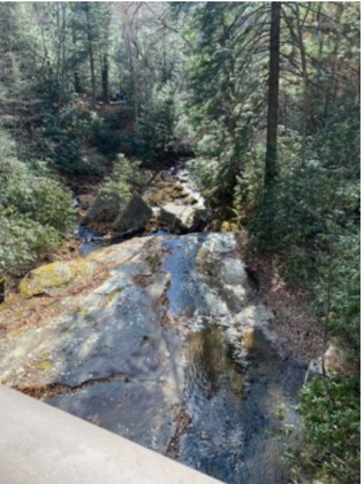
As one approaches the house from the visitors’ center, one is struck by the dramatic cantilevered floors of the main house. At this level, the waterfall is not visible.
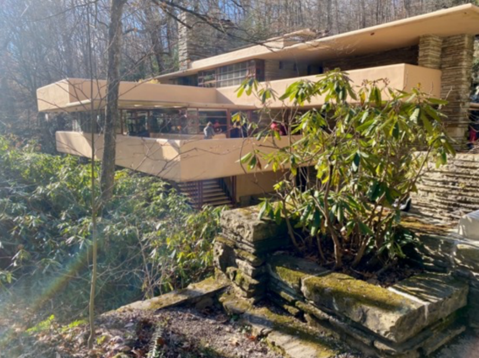
Looking down over the bridge crossing Bear Run, I noticed a statue down a level by the water. The guide explained it was by the noted cubist sculptor Jacques Lipschitz, evidence of the wide-ranging artistic interests of the Kaufmanns, whose art collection has been preserved in the house.
In laying out the main public living area, Wright demonstrated his concept of “compress and release” that leads the visitor through a narrow dark corridor into a bright open area comprising living, dining, and reading spaces. These in turn encourage one to move outside onto the large open terrace that overlooks the stream above the waterfall. In the upper levels that house the bedrooms, smallish rooms again were designed to encourage the inhabitants to move out to the private terraces that are adjacent to each room.
Fallingwater is full of intriguing architectural details. Before entering the house from a dark corner under an overhang, one has a place to wash the hiking dirt off one’s feet.
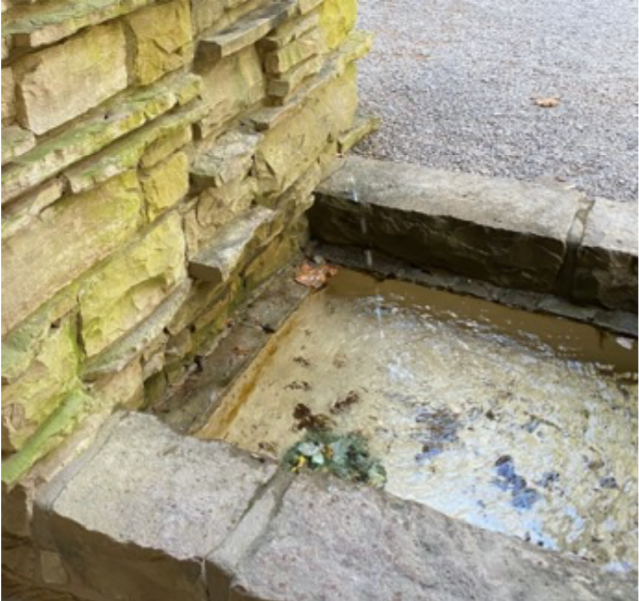
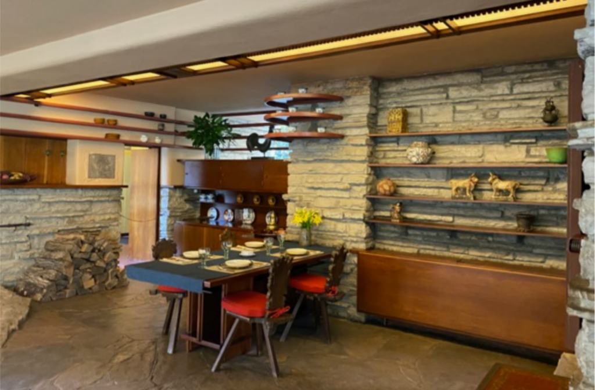
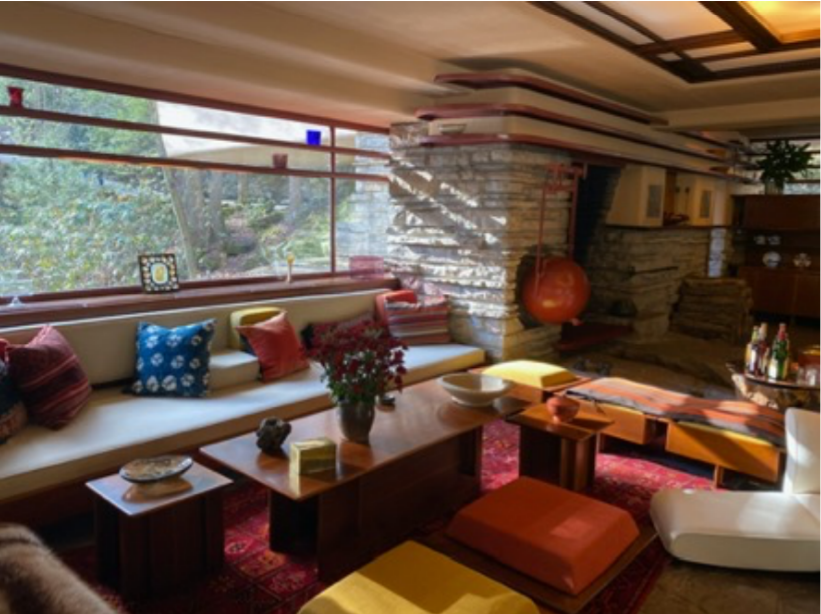
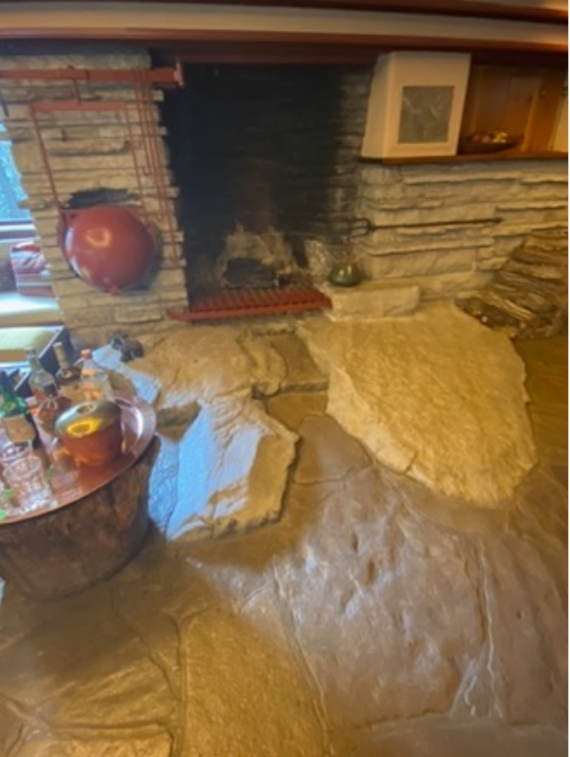
living room that leads directly to the water.
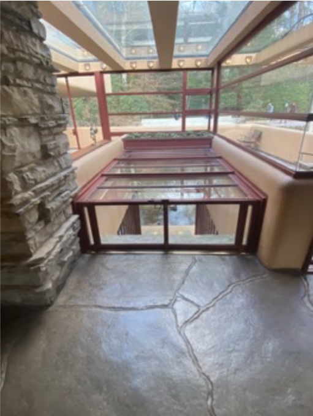
In the upper levels are the small bedrooms, again designed to enable inhabitants to move out to private terraces. If the home’s signature cantilevered terraces challenge us today to understand what holds them up, they had the same impact on Edgar Kaufmann. In Many Masks: A Life of Frank Lloyd Wright, Brendan Gill reports that Kaufmann sent Wright’s plans for a second opinion to a firm of engineers in Pittsburgh, who expressed grave doubts about the structure. Wright was furious and demanded his drawings be returned because Kauffman no longer “deserved” the house. Kaufmann responded firmly, “I am not the kind [of client] you think I am.” Heated back-and-forth communications were common between Wright and his clients. The work continued. Wright’s designs won out, but ultimately, the cantilevered areas were strengthened when the house later underwent restoration.
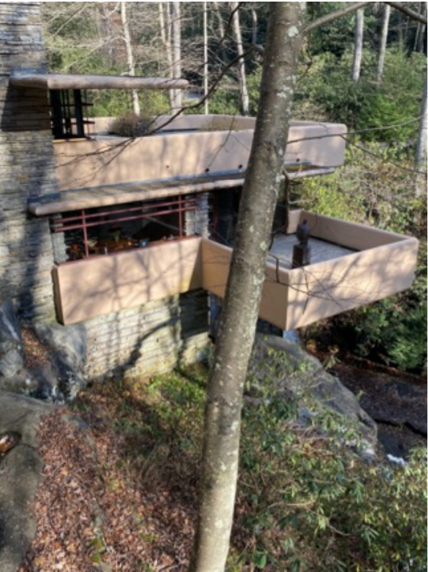 First and second-floor terraces |
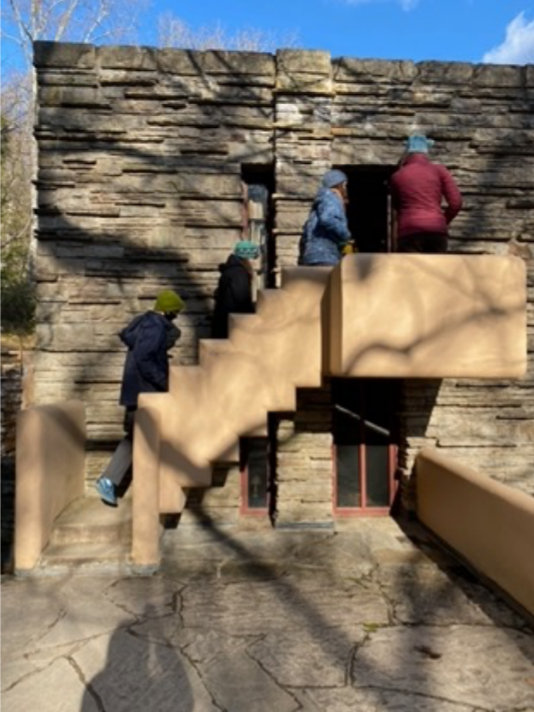 Exterior stairs to third-floor bedrooms |
In 1939 Kaufmann engaged Wright to build a guest house up the hill from the main house. The connecting walkway is covered by a unique concrete canopy reportedly poured in one operation. Adjacent to the guest house is a swimming pool frequented by the family.
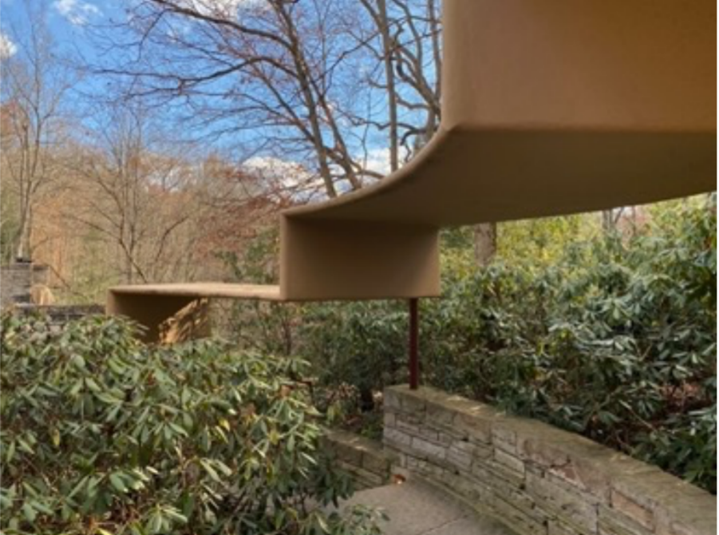
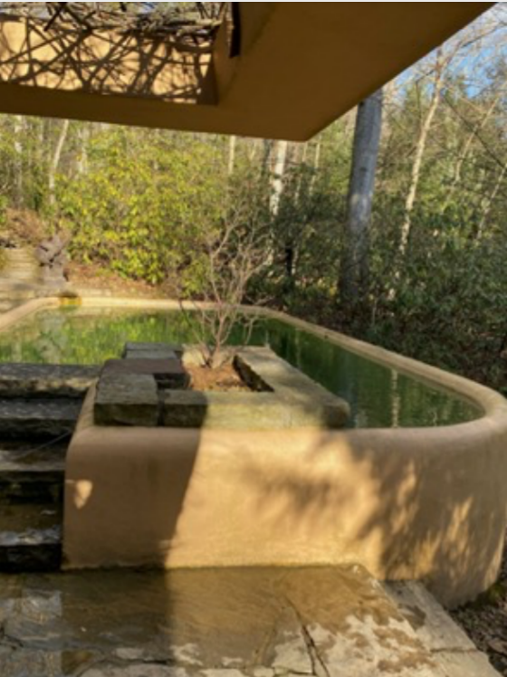
Throughout the property, Wright demonstrated his preference for built-ins: cabinets, desks, seating, and even a cutout beam to accommodate a tree.
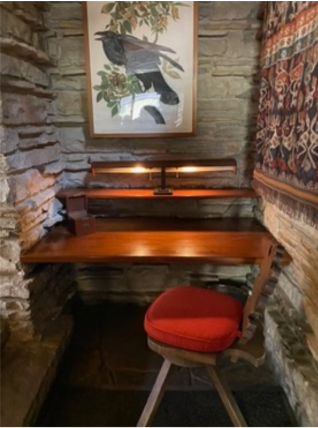 Desk inside an alcove by the front door |
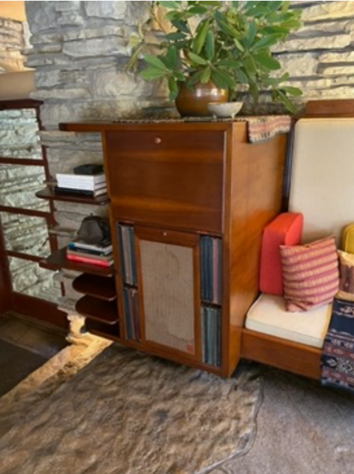 Living room cabinet |
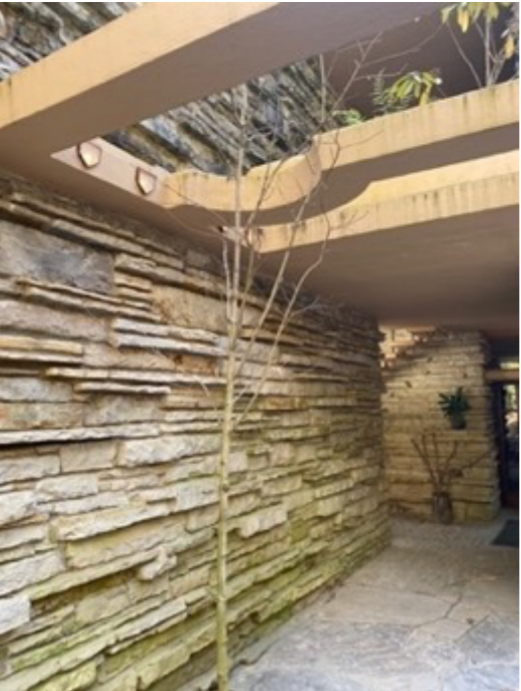
After the tour, I took the path to the bottom of the falls to look at the iconic view of the house; I realized that I now understood what had earlier eluded me, that the water flowed not through the house but under the terraces. “Leaving through the Visitor Center, designed by Edgar Kaufmann, Jr.’s partner Paul Mayen, we stopped at the excellent gift shop filled with architectural delights, perfect for finding grandchildren’s Christmas presents. Kaufmann eventually donated his parents’ property to the Western Pennsylvania Conservancy in 1963. The Conservancy maintains the property and provides excellent guided tours.
But one treat remained for me, the ladies’ room! Its beautiful lit backsplash is a lovely tribute to its natural surroundings. Fallingwater is now a UNESCO World Heritage Site and the recipient of many other architectural kudos. It indeed deserves its reputation as a masterpiece of 20th-century architecture.
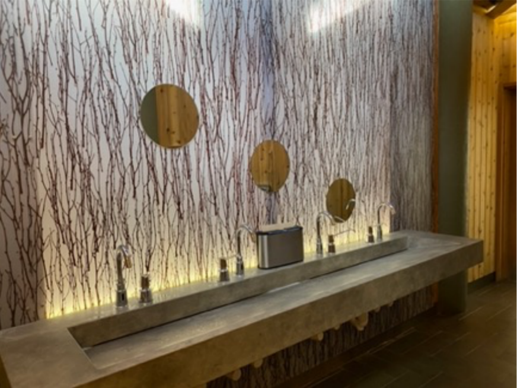
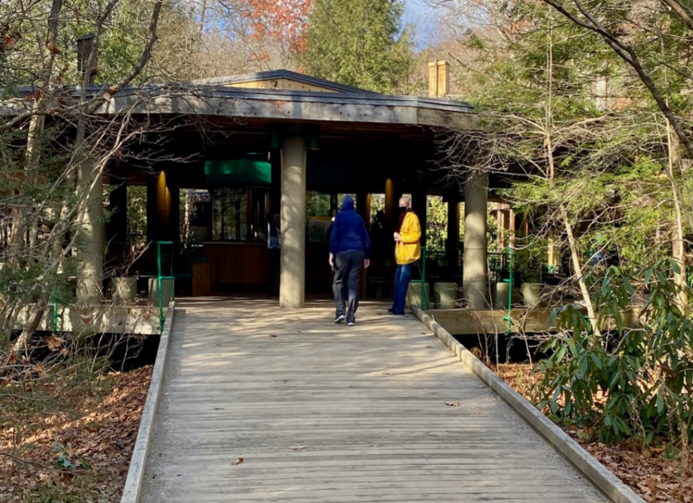
NOTE: photography is by Elizabeth Dunlop Richter unless otherwise credited